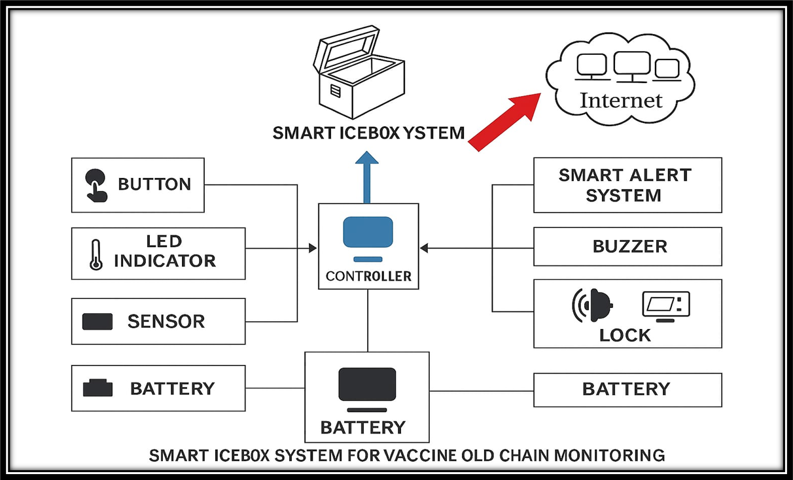
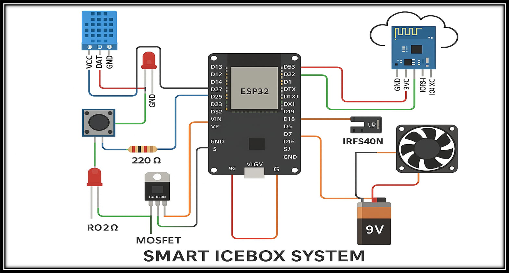

Smart Icebox System for Vaccine Cold Chain Monitoring
🔄 In Progress
The Smart Icebox System is designed to ensure the safe storage and transport
of vaccines and insulin by maintaining the required cold chain temperature (2°C–8°C).
It integrates IoT-based monitoring, real-time alerts, and secure access control, making it
suitable for rural clinics, disaster zones, and emergency healthcare delivery.
🛠 Tech Stack
- ESP32 / Arduino Microcontroller
- Peltier Module + PWM Cooling
- DHT22 Sensor (Temp & Humidity)
- RFID / Keypad Smart Lock
- SD Card + RTC (Offline Logging)
- GSM / Wi-Fi Module (Cloud Sync)
📌 Planned Features
- Real-time temperature and humidity monitoring
- Smart alerts: LED indicators, buzzer, mobile app notifications
- Secure access with RFID/keypad lock
- Battery backup for uninterrupted operation
- Offline logging + cloud auto-sync
👨💻 Role
Team Leader (4 members) – responsible for IoT integration, backend logic,
and prototype testing.
✨ Expected Impact
Reduce vaccine spoilage in remote/rural areas by ensuring cold chain reliability,
especially during emergencies and pandemics.
🚀 Future Enhancements
- Solar charging for off-grid areas
- AI-based vaccine usage prediction
- Battery health monitoring
- Mobile app with analytics dashboard
🖼️ Visuals
Block Diagram

Circuit Diagram
